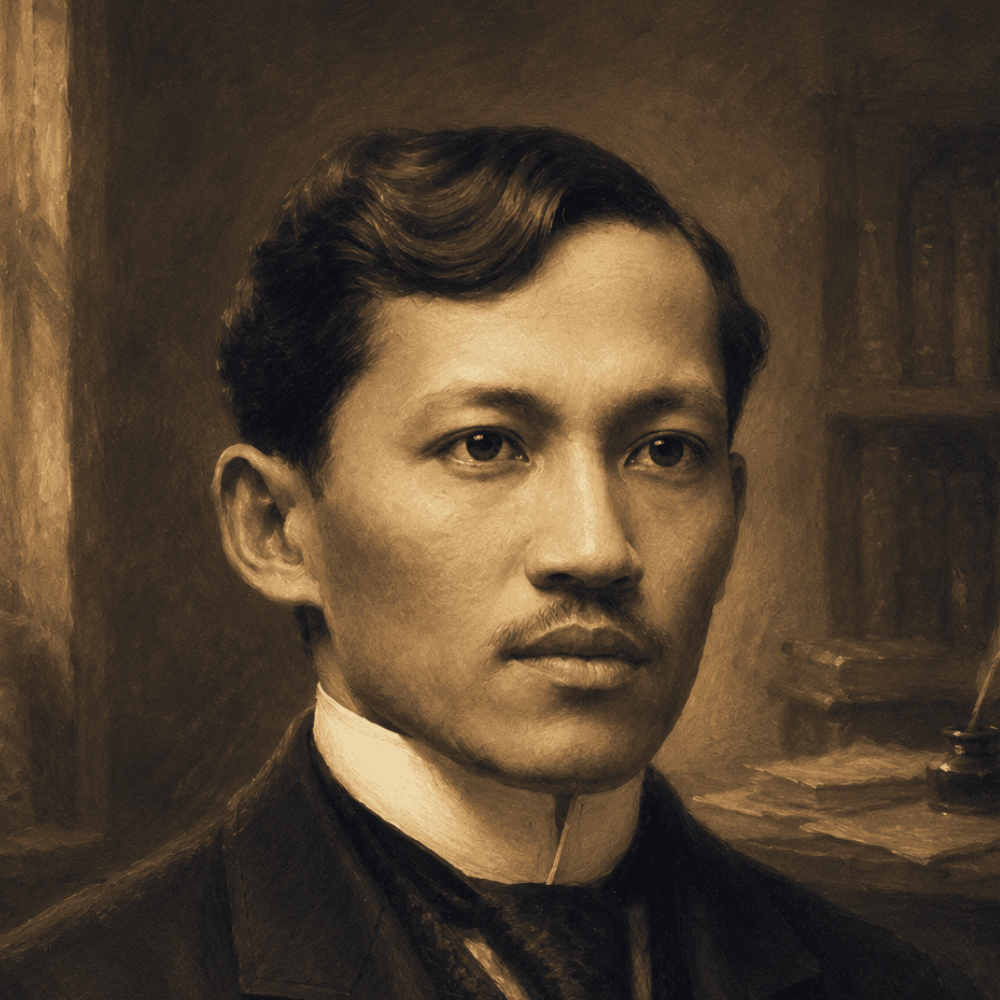

José Rizal
A journey through the life, writings, travels, struggles, and enduring legacy of one of the most influential figures in Philippine history.

A Life Written in History
José Protacio Rizal Mercado y Alonso Realonda was born on June 19, 1861, in Calamba, Laguna. Physician, writer, artist, linguist, and reformist, Rizal devoted much of his life to learning and expressing his ideas through literature and scholarship.
From Childhood to Legacy
The Young Rizal
Born in Calamba, Laguna, José Rizal grew up in a family that valued education, discipline, faith, and intellectual development.
The Learner
Rizal pursued his studies in the Philippines, developing an early passion for literature, languages, science, and the arts.
The Traveler
His journey to Spain began a period of extensive travel through Europe, where he encountered new cultures, ideas, and intellectual movements.
The Writer
Rizal's literary works gave voice to the experiences and concerns of Filipinos, including his novels Noli Me Tangere and El Filibusterismo.
The Reformer
Through his writings and civic efforts, Rizal advocated reforms, education, and greater rights for Filipinos under Spanish rule.
The Exile
In Dapitan, Rizal practiced medicine, taught students, pursued scientific interests, and contributed to the development of the local community.
The Final Journey
Rizal left the Philippines intending to serve as a military doctor in Cuba, but his journey ultimately brought him back to Manila.
The Hero
On December 30, 1896, Rizal was executed at Bagumbayan. His life, writings, and ideals continued to influence the Filipino nation.
His Works
Noli Me Tangere
Published in 1887, the novel portrays Philippine society and explores the experiences of its characters under colonial rule.
El Filibusterismo
Published in 1891, Rizal's second novel presents a darker continuation of the story begun in Noli Me Tangere.
Essays & Articles
Rizal produced numerous essays, annotations, letters, and articles concerning history, society, language, and reform.
Poetry
His poetry reflects his thoughts on education, country, youth, nature, family, and the human experience.